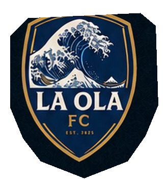

LA OLA FC · PUBLICATIONS
The publication reader
Choose a club publication
Return to La Ola FC to enter the current season guide or the preserved evolution edition.

LA OLA FCTHE CLUB · PUBLICATIONSLA OLA FC · PUBLICATIONS
Return to La Ola FC to enter the current season guide or the preserved evolution edition.